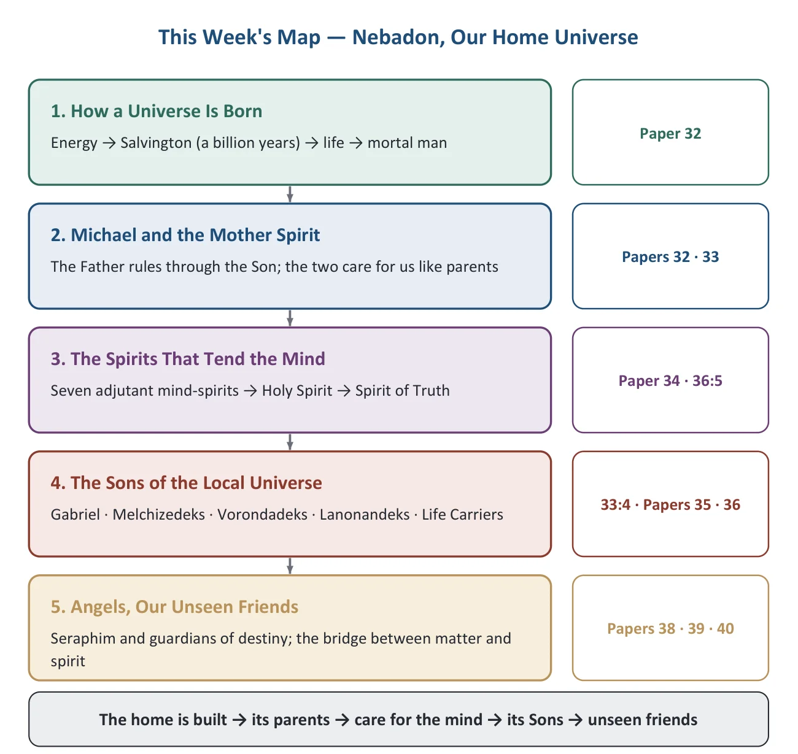
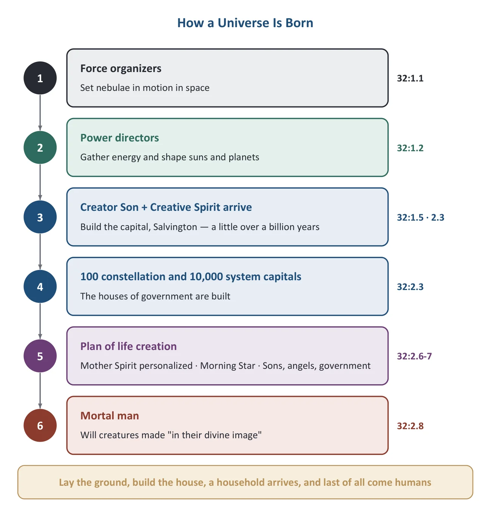
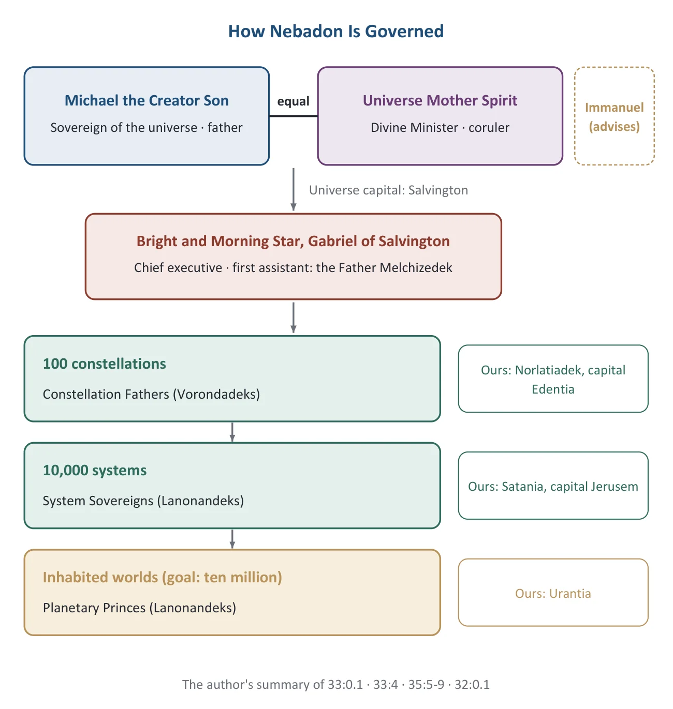
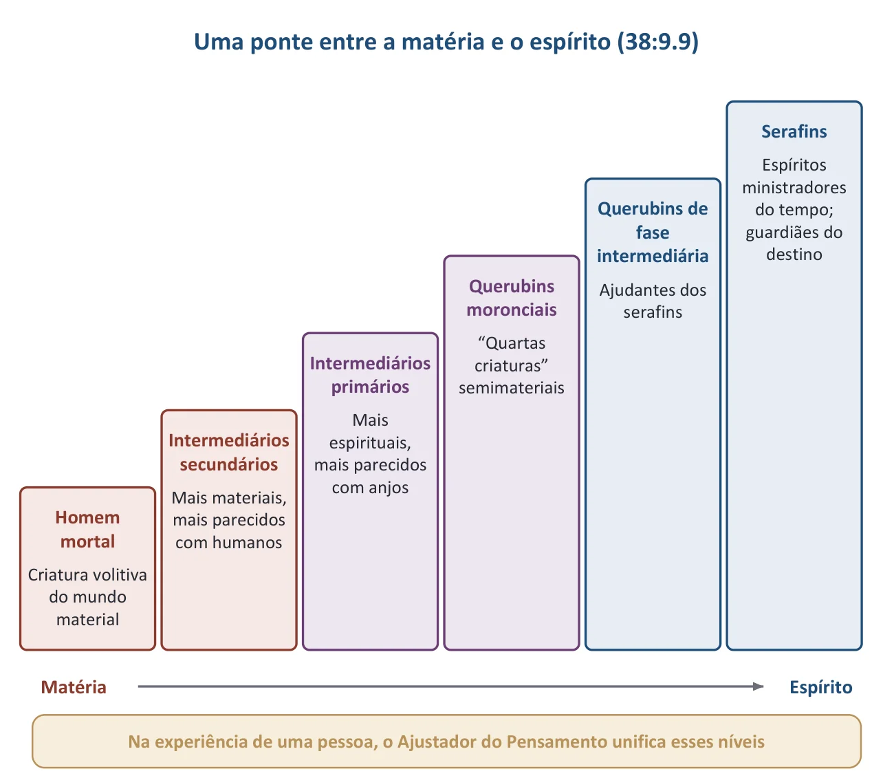

Nébadon, nosso universo natal
Leitura: Documentos 32–34 · Documento 35:0–4, 8 · Documento 36 · Documento 38 · Documento 39:4, 8 · Documento 40:5–6 (Documentos 41–42 por alto)

A Segunda parte desvia o nosso olhar do centro do universo para a nossa própria vizinhança. O Livro de Urântia descreve Nébadon, o universo local em que vivemos, como um lar que o Filho Criador Michael e o Espírito Materno do Universo prepararam durante mais de um bilhão de anos e construíram juntos. Nesse lar o Pai Universal governa por meio do Seu Filho, enquanto o Espírito Materno cuida da nossa mente por meio dos sete espíritos ajudantes da mente e do Espírito Santo. Filhos como os Melquisedeques e os Portadores da Vida, junto com os anjos seráficos, formam uma só família que ajuda os mortais a crescer. Nesta semana conhecemos a forma desse lar e os membros da sua casa, um a um.
História de abertura
Meses antes de um bebê nascer, os pais preparam um quarto. Pintam as paredes, trazem um bercinho e penduram cortinas. O bebê abre os olhos ali sem saber nada de como o quarto foi preparado e só muito mais tarde, já adulto, compreende a espera que houve por trás dele.
A história contada na Segunda parte de O Livro de Urântia é muito parecida com isso. Nas últimas três semanas olhamos o quadro geral: o Paraíso, Havona e os sete superuniversos. Agora, dentro desse quadro, voltamos ao lar onde nascemos. Esse lar tem um nome, Nébadon. Tem um construtor e tem uma família.
Vão aparecer muitos nomes desconhecidos, mas não é preciso decorá-los. Basta perceber quem construiu este lar e quem cuida de nós aqui.
1. Como nasce um universo
Cem constelações, dez mil sistemas
Na semana 3 seguimos o nosso endereço cósmico desde um planeta até um superuniverso. Nesse endereço, o “universo local” é a unidade que um Filho Criador constrói e governa. O documento 32 dá o seu tamanho logo na primeira frase.
UM UNIVERSO local é obra pessoal de um Filho Criador do Paraíso, da ordem dos Michaéis. Consta de cem constelações, das quais cada uma abrange cem sistemas de mundos habitados. Cada sistema conterá, afinal, aproximadamente mil esferas habitadas.32:0.1
Cem vezes cem vezes mil: a meta é de dez milhões de mundos habitados. Nébadon é um universo jovem, que ainda não chegou à metade do caminho.
A organização das moradas planetárias está ainda em andamento em Nébadon, pois este universo é, de fato, um agrupamento jovem nos reinos estelares e planetários de Orvônton. No último registro, em Nébadon havia 3 840 101 planetas habitados, e Satânia, o sistema local do vosso mundo, é claramente típico entre todos os outros sistemas.32:2.9
O nosso sistema, Satânia, tem 619 mundos habitados, e Urântia é um deles.
Um bilhão de anos de preparação
A construção começa muito antes da chegada do Filho Criador. Os organizadores da força do Paraíso põem as nebulosas em movimento, e os diretores de potência do superuniverso reúnem essa energia e lhe dão a forma de sóis e planetas.
Esses diretores de potência funcionam, isoladamente, nas fases pré-materiais e nas fases pós-força da criação de um universo local. Um Filho Criador não tem a possibilidade de iniciar a organização do universo antes que os diretores de potência hajam efetuado a mobilização de energias-do-espaço suficientes para proporcionar uma base material — sóis reais e esferas materiais — ao universo que emerge.32:1.2
Primeiro se prepara o terreno. Só quando ele está pronto é que chega o dono da casa.
Quando a matéria-energia houver atingido um certo estágio de materialização de massa, um Filho Criador do Paraíso surge em cena, acompanhado por uma Filha Criativa do Espírito Infinito. Simultaneamente com a chegada do Filho Criador, começa o trabalho na esfera arquitetônica que está para transformar-se no mundo sede-central desse universo local projetado.32:1.5
A “Filha Criativa do Espírito Infinito” é aquela que mais tarde se torna o Espírito Materno do Universo. A primeira obra dos dois foi construir a capital, Sálvington.
Desde a época dos passos iniciais dos centros de potência e dos controladores físicos, até a chegada nas esferas terminadas e completas de Sálvington, do corpo vivente de assessoramento, houve um intervalo de um pouco mais de um bilhão de anos do vosso tempo atual planetário.32:2.3
Em seguida vêm cem sedes-centrais de constelação e dez mil sedes-centrais de sistema; Filhos e anjos são trazidos à existência, e um governo é instituído. Os seres humanos vêm bem no fim dessa longa seqüência.
E então, quando esse universo houver sido assim tão completamente organizado e plenamente povoado, o Filho Criador inicia a proposta do Pai de criar o homem mortal à sua imagem e semelhança divinas.32:2.8

Por que não construí-lo perfeito desde o início?
Havona foi perfeita desde o princípio, mas um universo local torna-se perfeito aos poucos, evoluindo. Por que um caminho tão longo?
Em tudo isso, a sabedoria dos Criadores é mostrada. Seria igualmente fácil para o Pai Universal gerar todos os mortais como seres perfeitos; concedendo-lhes a perfeição pela sua palavra divina. Mas isso os privaria da experiência maravilhosa, da aventura da educação e aperfeiçoamento, associados à longa e gradual ascensão para o interior; experiência esta a ser provada apenas por aqueles afortunados que começam do ponto mais baixo possível na existência vivente.32:3.11
Começar bem de baixo é chamado de boa fortuna. Só quem subiu uma escada até o alto conhece cada degrau. O nosso começo desajeitado faz parte do plano.
Há um propósito grande e glorioso na marcha dos universos pelo espaço. Toda a vossa luta mortal não é em vão. Somos todos parte de um plano colossal, de uma obra gigantesca; e é a vastidão desse empreendimento que torna impossível ver grande parte dele de uma só vez e durante qualquer das vidas. Somos todos uma parte de um projeto eterno que os Deuses estão supervisionando e executando.32:5.1
Palavras novas
- Nébadon: o nome do universo local a que pertencemos; um universo jovem que cresce rumo à meta de dez milhões de mundos habitados.
- Sálvington: a capital de Nébadon, uma esfera arquitetônica onde Michael e o Espírito Materno têm a sua sede-central.
- Diretores de potência: seres do superuniverso que reúnem as energias do espaço e lhes dão a forma de sóis e planetas.
- Constelações e sistemas: as divisões administrativas de um universo local. Cada constelação reúne cem sistemas, e cada sistema cerca de mil mundos habitados.
2. Michael, o Filho Criador, e o Espírito Materno
O pai do nosso universo
Quem é o senhor desta grande casa? O documento 32 dá um nome notável.
Urântia pertence a um universo local cujo soberano é o Deus-homem de Nébadon, Jesus de Nazaré e Michael de Sálvington. E todos os planos de Michael para esse universo local foram integralmente aprovados pela Trindade do Paraíso, antes que ele embarcasse na suprema aventura do espaço.32:0.3
O Criador que fez o nosso universo veio a este planeta e viveu como homem. Ele é Jesus de Nazaré (semana 11). O que Michael é para nós?
Para o nosso universo, e para todos os seus mundos habitados, tal Filho Soberano, em todos os intentos e para todos os propósitos práticos, é Deus. Ele personifica todas as Deidades do Paraíso que os mortais em evolução podem compreender por meio do próprio discernimento. Este Filho e o seu Espírito Materno coligado são os vossos pais criadores.33:1.4
A expressão “em todos os intentos e para todos os propósitos práticos” merece atenção. O documento 33 afirma com clareza que Michael não é o Filho Eterno do Paraíso nem um membro da Trindade (33:1.2). O ponto é que todos os aspectos de Deus que somos capazes de reconhecer estão reunidos nele.
O Pai atua por meio do Filho
Onde está, então, o Pai Universal? O parágrafo de abertura do documento 33 expõe o princípio da administração do universo local.
EMBORA, com toda a certeza, o Pai Universal governe a Sua vasta criação, Ele funciona, na administração de um universo local, por intermédio da pessoa do Filho Criador. Nem o Pai atua, pessoalmente, de outro modo, nos assuntos administrativos de um universo local. Esses assuntos são confiados ao Filho Criador e ao Espírito Materno do universo local e aos múltiplos filhos deles.33:0.1
O Pai entrega esse trabalho por generosidade, não por indiferença. O documento 32 diz: “Deus não é uma personalidade autocentrada” (32:4.10). E entregar o trabalho também não significa que Ele fique à distância.
A salvaguarda mais segura, para a criatura, na longa luta a fim de alcançar o Pai, durante a época em que as condições inerentes tornam esse alcance de realização impossível, é agarrar-se, com tenacidade, ao fato de a verdade da presença do Pai estar nos seus Filhos. Literal e figurativamente, espiritual e pessoalmente, o Pai e os Filhos são Um. É um fato: aquele que houver visto um Filho Criador terá visto o Pai.32:3.6
E o Pai não atua só por meio do Seu Filho. Dentro de cada pessoa Ele mesmo está presente.
Nas criaturas mortais volitivas, o Pai está efetivamente presente por meio do Ajustador residente, um fragmento do Seu espírito pré-pessoal; e o Pai é também a fonte da personalidade de cada criatura volitiva mortal.32:4.5
Ao lado da Bíblia
Jesus disse a Filipe: “Quem me vê a mim vê o Pai” (João 14:9). Depois da ressurreição declarou: “É-me dado todo o poder no céu e na terra” (Mateus 28:18). O Livro de Urântia lê as duas frases do ponto de vista do Filho Criador. O Pai está presente no Filho (32:3.6), e só depois que o Espírito Materno prometeu a sua subordinação a Michael é que “todo o poder no céu e na Terra” foi entregue nas suas mãos (33:3.5).
A mãe do nosso universo
Ao lado de Michael está uma companheira, que escolheu livremente esse caminho desde o início.
O Espírito Materno do Universo de Sálvington, coligado a Michael no controle e na administração de Nébadon, pertence ao sexto grupo de Espíritos Supremos, sendo o de número 611 121 dessa ordem. Ela fez-se voluntária para acompanhar Michael na ocasião em que este se liberou das suas obrigações no Paraíso e, desde então, tem funcionado junto com Michael na criação e no governo do universo dele.33:3.2
O Espírito Materno também é chamado de Ministra Divina. Quando Michael voltou depois de completar a sua última outorga neste mundo, ela reconheceu o Filho como soberano. Michael, por sua vez, a elevou à condição de co-governante.
e a “Proclamação da Igualdade” final foi emitida e tornada pública. Embora seja o soberano deste universo local, o Filho tornou público, para os mundos, o fato da igualdade entre ele e o Espírito, em todos os dons de personalidade e atributos de caráter divino. E isso se transforma no modelo transcendental da organização da família, e do governo mesmo, para as criaturas inferiores dos mundos do espaço.33:3.6
O modo como os dois se honram mutuamente é o modelo para toda família.
O Filho e o Espírito-Mãe agora presidem ao universo de uma forma muito semelhante àquela pela qual um pai e uma mãe velam pela sua família de filhos e filhas, e suprem-na. Não é inteiramente fora de propósito referir-se ao Espírito Materno do Universo, a Ministra Divina, como a companheira criativa do Filho Criador, e considerar as criaturas dos reinos como os seus filhos e filhas — uma grande e gloriosa família, cujas responsabilidades todavia são incalculáveis e cuja vigilância é infindável.33:3.7
O nosso universo não é uma repartição pública, mas um lar onde os pais velam pelos filhos.
Esclarecendo um mal-entendido
Um mal-entendido comum: como Deus entregou o universo local ao Seu Filho, o Pai Universal deve estar descansando em algum lugar distante de nós. O que diz O Livro de Urântia: não devemos pensar no Pai como silencioso ou inativo (32:4.1). Pessoalmente Ele governa por meio do Seu Filho, mas na mente dos Seus filhos mortais Ele está realmente presente como o Ajustador residente (32:3.4, 32:4.5). Ele delega a administração, mas é o mais próximo de todos de cada indivíduo.
3. Os espíritos que cuidam da mente
Três correntes de espírito
O Espírito Materno cuida de modo especial da mente. O documento 34 diz que três circuitos espirituais fluem pelo nosso universo.
Há três circuitos distintos espirituais no universo local de Nébadon: 1. O circuito do espírito efundido do Filho Criador, o Confortador, o Espírito da Verdade. 2. O circuito do espírito da Ministra Divina, o Espírito Santo. 3. O circuito da ministração da inteligência, que inclui as atividades mais ou menos unificadas, porém com funções diferentes, dos sete espíritos ajudantes da mente.34:4.1-4
O Espírito da Verdade vem de Michael, o Filho; o Espírito Santo e os sete espíritos ajudantes da mente vêm do Espírito Materno. Neste livro, “Espírito Santo” significa a presença espiritual do Espírito Materno do universo local.
Os sete espíritos ajudantes da mente
No nível mais baixo atuam os sete espíritos ajudantes da mente.
Os sete espíritos ajudantes da mente são uma criação da Ministra Divina de um universo local. Esses espíritos-mente são semelhantes em caráter, mas diferentes em poder, e todos compartilham do mesmo modo da natureza do Espírito Materno do Universo; embora dificilmente possam ser encarados como personalidades à parte da sua Mãe Criadora. Aos sete ajudantes têm sido dados os nomes seguintes: espírito da sabedoria, espírito da adoração, espírito do conselho, espírito do conhecimento, espírito da coragem, espírito da compreensão, espírito da intuição — da percepção rápida.34:4.10
| Ordem | Nome | O que faz | Exemplo do dia-a-dia |
|---|---|---|---|
| 1 | Intuição | Percepção rápida; o instinto de autopreservação | Tirar a mão de algo quente |
| 2 | Compreensão | Associar idéias e julgar com rapidez | Avaliar uma situação e decidir na hora |
| 3 | Coragem | Lealdade; a raiz da resistência moral | Fazer o que é certo apesar do medo |
| 4 | Conhecimento | Curiosidade e descoberta; o espírito científico | Seguir uma pergunta até o fim |
| 5 | Conselho | O impulso social; a capacidade de trabalhar em conjunto | Conversar e cooperar com os vizinhos |
| 6 | Adoração | O impulso religioso; a insígnia de um candidato a alma | Curvar-se diante de Alguém maior que si mesmo |
| 7 | Sabedoria | Coordena o trabalho de todos os ajudantes | Recorrer à experiência passada para achar o caminho certo |
Esses espíritos atuam desde as formas de vida mais primitivas.
A presença dos sete espíritos ajudantes da mente, nos mundos primitivos, é o que condiciona o curso da evolução orgânica; isso explica por que a evolução é proposital e não acidental.36:5.1
A mente atravessa um umbral
Os cinco primeiros espíritos atuam também sobre os animais. O que faz do ser humano um ser humano são o sexto e o sétimo. O documento 36 apresenta assim o espírito da adoração.
6. O espírito da adoração — o impulso religioso, o primeiro anseio diferencial a separar as criaturas dotadas de mente em duas classes básicas de existência mortal. O espírito da adoração distingue para sempre o animal, ao qual está associado, das criaturas sem alma, no entanto com dotação mental. A adoração é a insígnia da candidatura à ascensão espiritual.36:5.11
Há muito tempo, alguém se ajoelhou pela primeira vez diante de algo maior do que ele mesmo. O documento 34 explica o que aconteceu nesse momento.
O homem mortal inicialmente tem a experiência da ministração do Espírito, em conjunção com a mente, quando a mente puramente animal da criatura evolucionária desenvolve a capacidade de recepção dos ajudantes da adoração e da sabedoria. Essa ministração do sexto e do sétimo ajudantes indica que a evolução da mente atravessa o umbral da ministração espiritual. E essas mentes, já com as funções da adoração — e da sabedoria — , imediatamente são incorporadas aos circuitos espirituais da Ministra Divina.34:5.3
No momento em que uma mente se volta para a adoração, começa a ministração do Espírito Santo. Essa pessoa pode então receber um Ajustador e, depois que o Espírito da Verdade foi efundido, toda mente normal recebe um (34:5.4).
A presença do Espírito Santo, vindo da Filha do Universo do Espírito Infinito, a presença do Espírito da Verdade, do Filho do Filho Eterno, no Universo, e a presença do espírito-Ajustador do Pai do Paraíso, em um mortal evolucionário ou com ele, denotam a simetria de dom espiritual e de ministração, e qualificam esse mortal a compreender, e conscientemente transformar em realidade, o fato-fé da filiação a Deus.34:5.7

O Espírito que nunca força
Ainda assim, duas forças estão sempre em disputa dentro de nós. O documento 34 não esconde esse fato.
Em cada mortal existe uma natureza dual: a herança das tendências animais e o elevado impulso do dom do espírito. Durante o curto período em que viverdes em Urântia, esses dois impulsos diversos e opostos raramente poderão ser conciliados por completo, dificilmente poderão ser harmonizados e unificados;34:6.9
Quando o coração e a conduta puxam em direções diferentes, isso não é um fracasso particular, mas a condição de todos nós. Ao nosso lado, o Espírito simplesmente guia.
O Espírito nunca constrange, apenas guia. Se fores um aprendiz de vontade forte, se quiseres atingir o nível do espiritual e alcançar as alturas divinas, se desejares sinceramente alcançar a meta eterna, então o Espírito divino guiar-te-á, suave e amorosamente, na trajetória da filiação e do progresso espiritual.34:6.11
Perto do fim do documento 42, uma frase resume essa relação numa só imagem.
Vós, num mundo material, pensais em um corpo como tendo um espírito; mas nós consideramos o espírito como tendo um corpo. Os olhos materiais são verdadeiramente as janelas da alma que nasce do espírito. O espírito é o arquiteto, a mente é o construtor, o corpo é a edificação material.42:12.12
O corpo no espelho não é a pessoa inteira. Aos que já se puseram neste caminho, o documento 34 faz uma promessa.
Havendo começado o caminho da vida eterna, aceitado tal compromisso e recebido as vossas ordens de avançar, não temais os perigos do esquecimento humano e da inconstância mortal, não vos perturbeis pela dúvida e o temor ao fracasso, nem pela confusão da perplexidade; não hesiteis, nem questioneis sobre a vossa situação e posição, pois em todas as horas escuras, em todas as encruzilhadas da luta para ir à frente, o Espírito da Verdade falará sempre, declarando: “Este é o caminho”.34:7.8
Palavras novas
- Espírito Materno do Universo (Ministra Divina): a filha do Espírito Infinito que cria e governa Nébadon junto com Michael.
- Sete espíritos ajudantes da mente: sete circuitos por meio dos quais o Espírito Materno atua no nível da mente, ajudando as suas capacidades básicas, da intuição à sabedoria.
- Espírito Santo: neste livro, a presença espiritual do Espírito Materno do universo local.
Ao lado da Bíblia
O livro do Apocalipse fala de “sete lâmpadas de fogo, as quais são os sete Espíritos de Deus”, que ardiam diante do trono (Apocalipse 4:5). O documento 34 explica isso como uma visão dos sete espíritos ajudantes da mente (34:4.11). Cita também as palavras de Paulo, “os frutos do espírito são o amor, alegria, paz, resignação, doçura, bondade, fé, mansidão e temperança” (Gálatas 5:22–23), como a marca de uma vida guiada pelo espírito (34:6.13).
4. Os Filhos do universo local
Gabriel e a estrutura do governo
O primeiro ser que Michael e o Espírito Materno criaram juntos é a Brilhante Estrela Matutina, Gabriel de Sálvington. Há apenas um ser assim em cada universo local, e é ele quem conduz a administração efetiva.
Gabriel de Sálvington é o comandante executivo do universo de Nébadon e o árbitro de todos os apelos executivos que dizem respeito à sua administração. Esse executivo do universo foi criado com dons plenos e apropriados ao seu trabalho, e adquiriu experiência também com o crescimento e a evolução da nossa criação local.33:4.5
Abaixo dele governam os Pais da Constelação, os Soberanos dos Sistemas e os Príncipes Planetários. Emanuel de Sálvington, embaixador da Trindade do Paraíso, aconselha apenas quando solicitado (33:5.2). Michael dedica-se somente à criação, à sustentação e à ministração, e não participa pessoalmente do julgamento (33:7.1).
Embora possa parecer que algumas contendas humanas, às vezes, sejam julgadas de modo injusto em Urântia, de fato, a justiça e a eqüidade divinas prevalecem no universo. Vós estais vivendo em um universo bem ordenado e, mais cedo ou mais tarde, podeis confiar que sereis tratados com a justiça devida e até mesmo com misericórdia.33:7.8

Quatro ordens de Filhos
Depois de Gabriel, Michael e o Espírito Materno trouxeram à existência muitas ordens de Filhos. O documento 35 apresenta quatro delas.
Os tipos de Filhos a serem considerados neste documento têm a sua origem no universo local; são uma progênie do Filho Criador do Paraíso, em enlaces variados com o seu complemento, a Ministra Divina, ou Espírito Materno do Universo. As ordens de filiação do universo local que encontram menção nestas narrativas são: 1. Os Filhos Melquisedeques. 2. Os Filhos Vorondadeques. 3. Os Filhos Lanonandeques. 4. Os Filhos Portadores da Vida.35:0.2-6
| Ordem | Outros nomes · posto principal | O que fazem | Ligação com Urântia |
|---|---|---|---|
| Melquisedeque | Filhos mais velhos da família; Filhos emergenciais | Dirigem as escolas; acorrem para ajudar nas crises | Melquisedeque de Salém, a terceira revelação |
| Vorondadeque | Pais da Constelação | Governam as constelações; gabinete consultivo de Michael | Os Altíssimos de Edêntia |
| Lanonandeque | Soberanos dos Sistemas, Príncipes Planetários | Governam sistemas e planetas | A rebelião de Lúcifer e Caligástia |
| Portador da Vida | Portadores da vida | Projetam, implantam e cuidam da vida | Implantaram a vida nos mares primitivos |
Os Melquisedeques, os filhos mais velhos
Os Melquisedeques são a primeira ordem de Filhos capaz de ficar a meio caminho entre o céu e a terra e servir diretamente às raças evolucionárias. O documento 35 os compara ao filho mais velho de uma casa.
A ordem Melquisedeque de filiação ocupa a posição e assume a responsabilidade do filho mais velho em uma grande família. A maior parte do seu trabalho é regular e rotineira, de certa forma, mas, em grande parte, é voluntária e inteiramente auto-imposta. A maioria das assembléias especiais que se reúne em Sálvington, de tempos em tempos, é convocada por moção dos Melquisedeques. Pela sua própria iniciativa, esses Filhos vigiam o seu universo nativo.35:2.3
Aqui está a imagem de um filho mais velho que cuida dos mais novos sem que ninguém lhe peça. O seu trabalho principal é ensinar os ascendentes, mas eles têm também um outro nome.
Em Edêntia, a sede-central da vossa constelação, eles são conhecidos como os Filhos emergenciais. Estão sempre prontos para servir sob quaisquer exigências — físicas, intelectuais ou espirituais — , seja em um planeta, sistema, constelação ou universo. Sempre, e em quaisquer circunstâncias em que uma ajuda especial se fizer necessária, encontrareis ali um ou mais Filhos Melquisedeques.35:4.2
Melquisedeque de Salém, que conhecemos na semana 1, foi um Filho desta ordem que veio à semelhança humana num tempo de crise (35:4.5).
Quanto mais perto chegam
Os Lanonandeques são os Filhos que governam sistemas e planetas. Chegar mais perto dos seres humanos traz o maior risco.
Como a ordem Lanonandeque é uma ordem de filiação um pouco mais baixa do que a Melquisedeque e a Vorondadeque, os Filhos Lanonandeques prestam um serviço maior nas unidades subordinadas do universo, pois são capazes de aproximar-se mais da criação inferior de raças inteligentes. Eles também correm grandes riscos de desviar-se, de sair da técnica aceitável de governo do universo.35:8.15
Lúcifer, outrora soberano do nosso sistema, e Caligástia, outrora príncipe do nosso planeta, pertenciam ambos a esta ordem. A história da rebelião deles vem na semana 7.
Os que implantam a vida
A quarta ordem, a dos Portadores da Vida, responde a uma velha pergunta sobre a origem da vida.
A VIDA não se origina espontaneamente. A vida é gerada de acordo com os planos formulados pelos Arquitetos do Ser (não revelados) e surge nos planetas habitados, por importação direta, ou em conseqüência das operações dos Portadores da Vida dos universos locais. Esses seres que portam a vida estão entre as mais interessantes e versáteis das diversas famílias de Filhos do universo. Estão encarregados de elaborar a vida para as criaturas e levá-la às esferas planetárias.36:0.1
Como um jardineiro que fica ao lado das sementes que semeou, os Portadores da Vida permanecem por longo tempo depois de implantar a vida, para fomentar o seu desenvolvimento (36:0.1). A história da vida em Urântia continua na semana 8.
Palavras novas
- Brilhante Estrela Matutina: o primeiro ser criado em conjunto pelo Filho Criador e pelo Espírito Materno, o executivo principal de um universo local; em Nébadon, Gabriel de Sálvington.
- Filhos Melquisedeques: a ordem dos filhos mais velhos do universo local; dirigem a educação dos ascendentes e intervêm como “Filhos emergenciais” nos mundos em crise.
- Filhos Vorondadeques e Lanonandeques: Filhos do universo local que governam as constelações (Vorondadeques) e os sistemas e planetas (Lanonandeques).
- Portadores da Vida: Filhos que projetam a vida, a implantam nos planetas e cuidam do seu desenvolvimento.
5. Os anjos, nossos amigos invisíveis
Filhas do Espírito Materno
Enquanto Michael trazia à existência os Filhos, o Espírito Materno criou sozinha os anjos. Os anjos que mais de perto ajudam os mortais num universo local são os serafins. O documento 38 os descreve assim.
Os anjos não têm corpos materiais, mas são seres definidos, contínuos e discretos; são de natureza e origem espirituais. Embora invisíveis para os mortais, eles percebem-vos enquanto ainda na carne sem a ajuda de transformadores ou de conversores; eles compreendem intelectualmente o modo de vida mortal e compartilham, com os homens, de todas as emoções e sentimentos não sensuais. Apreciam os vossos esforços na música, na arte e no humorismo verdadeiro, e têm grande prazer com isso. Conhecem plenamente as vossas lutas morais e dificuldades espirituais. Amam os seres humanos e apenas o bem pode resultar dos vossos esforços para compreendê-los e amá-los.38:2.1
Eles estão muito mais perto de nós do que os anjos alados das pinturas. São amigos que apreciam até as nossas canções e o nosso humor, e a amizade se aprofunda depois da morte.
Pelos dons de natureza e personalidade, os serafins estão apenas um pouco adiante das raças mortais, na escala de existência das criaturas. De fato, quando fordes libertados da carne, vos tornareis muito semelhantes a eles. Nos mundos das mansões, começareis a apreciar os serafins; nas esferas das constelações, a gostar deles e, em Sálvington, eles irão compartilhar convosco os lugares de descanso e adoração.38:2.6
Guardiães do destino
Entre os serafins, anjos experientes são designados para uma só pessoa e caminham com ela a vida inteira. Eles são chamados de guardiães do destino.
Na carreira do tempo, a suprema escolha dos serafins é o posto de anjo guardião no fito de poderem atingir a carreira de finalidade e serem qualificados para compromissos nas esferas eternas do serviço seráfico. Esses guias pessoais dos filhos do tempo são chamados de guardiães do destino, significando que guardam as criaturas mortais no caminho do destino divino e que, fazendo assim, estão determinando o seu próprio destino.39:8.5
Ao nos guardar, o anjo guardião também caminha rumo ao seu próprio destino. O documento 113 diz: “O ensinamento sobre os anjos guardiães não é um mito” (113:1.1). Voltaremos a eles numa semana posterior.
Uma ponte entre a matéria e o espírito
Entre os humanos e os anjos há ainda outros membros da casa: os seres intermediários, que ficam entre os humanos e os anjos, e os querubins, os mais baixos dos anjos. O documento 38 diz que, juntos, eles ligam os mundos material e espiritual sem deixar nenhuma lacuna.
O abismo entre os mundos material e espiritual fica perfeitamente preenchido pela ligação consecutiva feita em série, entre o homem mortal e a intermediária secundária, a intermediária primária, o querubim moroncial, o querubim de fase intermediária e os serafins. Na experiência pessoal de um indivíduo mortal, esses vários níveis estão, sem dúvida, mais ou menos unificados e tornam-se pessoalmente significativos por meio das operações misteriosas, que passam desapercebidas, do Ajustador do Pensamento.38:9.9

O primeiro elo de uma longa cadeia
Os serafins do documento 39 conhecidos como estimuladores da moralidade retratam a vida mortal como uma corrente contínua.
A vossa curta permanência em Urântia, esta esfera da infância mortal, é apenas um elo, o primeiríssimo da longa cadeia que irá estender-se através dos universos e através das idades eternas. Não é tanto o que aprendeis nesta primeira vida; é a experiência de viver essa vida que é importante. Mesmo o trabalho deste mundo, por mais importante que seja, não tem tanta importância, não tanto quanto a maneira com a qual vós fazeis esse trabalho.39:4.13
O que continua na eternidade é menos o que fazemos do que o espírito com que o fazemos. O documento 40 é franco sobre o lugar dos mortais entre os filhos ascendentes.
As raças mortais permanecem sendo representantes da ordem mais baixa da criação inteligente e pessoal. Vós, mortais, sois divinamente amados e todos podereis escolher aceitar o destino certo de uma experiência gloriosa; mas não sois ainda, por natureza, da ordem divina; sois ainda totalmente mortais.40:6.1
Um ser no degrau mais baixo, mas divinamente amado e livre para escolher o destino mais alto: isso é um ser humano. Quão larga é essa porta?
Quanto às possibilidades de sobrevivência mortal, fique bem esclarecido para sempre: Todas as almas, de todas as fases possíveis da existência mortal, sobreviverão, desde que manifestem a vontade de cooperar com os seus Ajustadores residentes e posto que demonstrem um desejo de encontrar Deus e de alcançar a perfeição divina, ainda que esses desejos não sejam senão as primeiras e pálidas centelhas da compreensão primitiva da “verdadeira luz que ilumina todo homem que vem ao mundo”.40:5.19
Uma única centelha pálida basta. Este lar, preparado durante mais de um bilhão de anos, tem esperado por filhos que levem essa pequena luz. Na próxima semana entramos nos mundos das mansões, onde despertamos depois da morte.
Esclarecendo um mal-entendido
Um mal-entendido comum: os anjos vigiam do alto para acusar as pessoas pelas suas faltas; por isso devemos orar a eles e adorá-los. O que diz O Livro de Urântia: os anjos são superiores a nós em status espiritual, mas não são os nossos juízes nem acusadores (38:2.4). É bom amá-los, mas não se deve adorá-los; os próprios anjos dizem que cada um deles é “um servo junto contigo”, que também adora a Deus (38:2.5). Os anjos são amigos que compreendem as nossas lutas e nos animam.
Pontos-chave da semana
- Um universo local é a obra de um Filho Criador, evoluindo rumo a cem constelações, dez mil sistemas e dez milhões de mundos habitados. O nosso chama-se Nébadon.
- Depois que os diretores de potência lançaram os alicerces, Michael e o Espírito Criativo passaram mais de um bilhão de anos construindo Sálvington; o homem mortal vem bem no fim.
- Michael, o soberano de Nébadon, viveu nesta terra como Jesus de Nazaré. O Pai Universal governa o universo local por meio do Seu Filho, mas está intimamente presente na mente humana como o Ajustador.
- Michael e o Espírito Materno do Universo cuidam do universo como um pai e uma mãe. A Proclamação da Igualdade é o modelo para toda família e todo governo.
- O Espírito Materno cuida da mente por meio dos sete espíritos ajudantes da mente e do Espírito Santo. Quando os espíritos da adoração e da sabedoria estão atuando, a mente atravessa o umbral da ministração espiritual.
- Os Filhos do universo local, como os Melquisedeques, os Vorondadeques, os Lanonandeques e os Portadores da Vida, ensinam, governam e implantam a vida.
- Os serafins são amigos invisíveis que compreendem e amam os seres humanos e, como guardiães do destino, percorrem ao lado de cada pessoa o seu caminho. Mas não devem ser adorados.
Perguntas para refletir
- Como a imagem do nosso universo como um “lar”, onde um pai e uma mãe velam pelos filhos, e não como uma repartição pública (33:3.7), muda a forma como você pensa a sua relação com Deus?
- De qual dos sete espíritos ajudantes da mente você sente que mais precisa na sua vida agora? O que pode significar que os espíritos da adoração e da sabedoria marquem um “umbral” (34:5.3)?
- À luz das palavras “Mesmo o trabalho deste mundo, por mais importante que seja, não tem tanta importância, não tanto quanto a maneira com a qual vós fazeis esse trabalho” (39:4.13), como você poderia fazer de outro modo as tarefas comuns de hoje?
Leitura para a próxima semana
- Documentos 47–48, 112 e outros — Além da morte, para a escola do universo: a manhã da ressurreição, os sete mundos das mansões e a vida moroncial